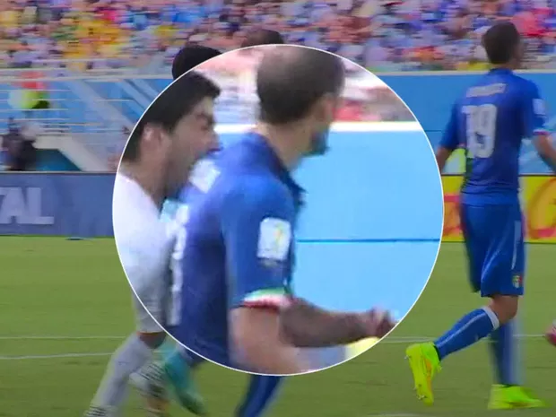
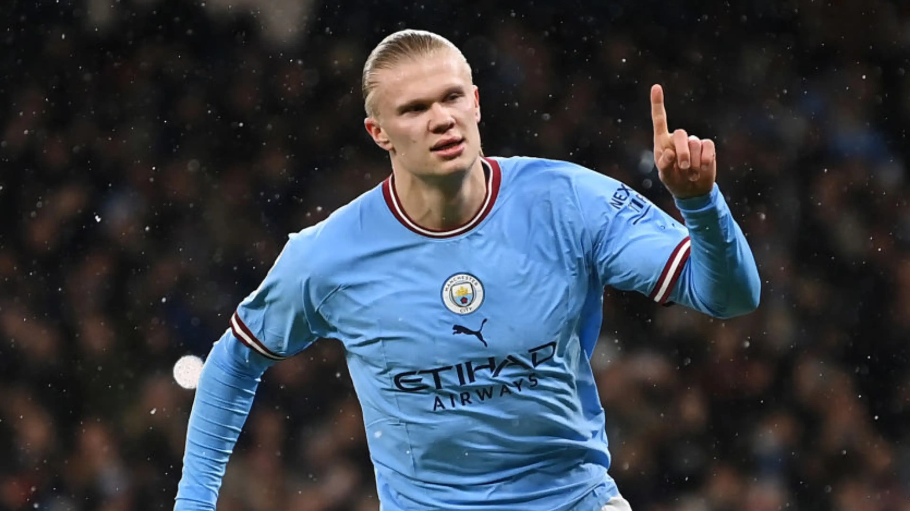
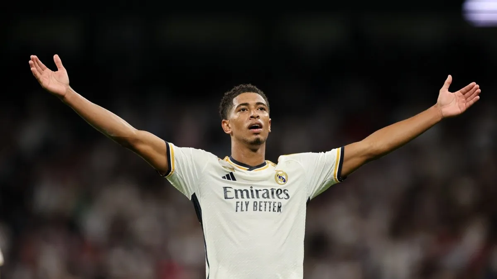

PORTAL GEEKS
A mordida de 2014
Suarez morde jogador em jogo pela copa do mundo
Suarez em um ato de competição ou assassinato, morde jogador da Itália, ele foi suspenso por 9 jogos, ele diz ser um ato de raiva e que ele se acalma mordendo jogadores adversários.
Os 3 jogadores mais valiosos de hoje em dia
Haaland
Haaland é o primeiro jogador mais valioso da atualidade, chegando a exatos 194,3 milhões de euros.
Bellingham
Bellingham, com seu novo apelido Bellingol, está em segundo na lista, chegando a 170,5 milhões de euros.
Vinicius Junior

Vinicius Junior, jogando muito bem no Real Madrid, é hoje o terceiro jogador mais valioso, chegando a 160,7 milhões de euros.
Os melhores jovens brasileiros hoje
-
Endrick
Endrick atua nos gramados com 17 anos e foi a principal promessa do Palmeiras na última temporada, além de já atuar pela seleção brasileira e vai atuar pelo Real Madrid.Hoje, Endrick já joga no time do Real Madrid, vendido pelo Palmeiras por 35 milhões de euros, além de 25 milhões variáveis.
-
Vitor Roque
Vitor Roque, antigo jogador do Atlético Paranaense, com 19 anos, atua no Barcelona e disputa o número nove da seleção junto a Endrick, Richarlison, entre outros.O jogador culé defende os após a venda do Paranaense por 30 milhões de euros, além de 31 milhões de variáveis, e ao chegar no Barcelona, foi reconhecido como "Tigrinho", pois seu pai já tinha sido jogador e era chamado de "Tigrão".
-
Vinicius Junior
Vini Jr que já foi citado anteriormente, já é uma realidade no mundo inteiro, atuando no Real Madrid na ponta esquerda com somente 23 anos.O Malvadeza é o titular da seleção brasileira e é estimado em mais de 250 milhões de euros, já conquistou diversas conquistas, como a Champions League, LaLiga e outros feitos muito grandes para um jovem de 23 anos.
-
Rodrygo
Rodrygo tem 23 anos e atua no Real Madrid e foi apelidado como o Raio por ter uma velocidade gigantesca.O Raio já foi campeão da Champions e hoje é estimado em mais de 240 milhões de euros, com 23 anos também já é realidade e atua na seleção brasileira, junto ao seu companheiro Vini Jr.
| Porcentagem de de ganhar a Champions League | |||
|---|---|---|---|
| Manchester City | Real Madrid | Arsenal | PSG |
| 32,3% | 16,87% | 13,09% | 11,8% |
| O Manchester City é o time com mais chance de ganhar a Champions League, já que sua última campanha deu campeões. | O Real Madrid é o segundo time com mais chance, o time já é conhecido por vitórias na Champions e acumulou 14 na sua história. | O Arsenal é o terceiro time com mais chance de vencer, o elenco é estrelado com muitas jovens promessas, já fazem uma boa campanha na Premier League. | Eu não faço ideia porque esse time horrível tá aqui em quarto, mas mesmo com um elenco lixo e daqui a pouco sem Mbappé, é o quarto da lista. |